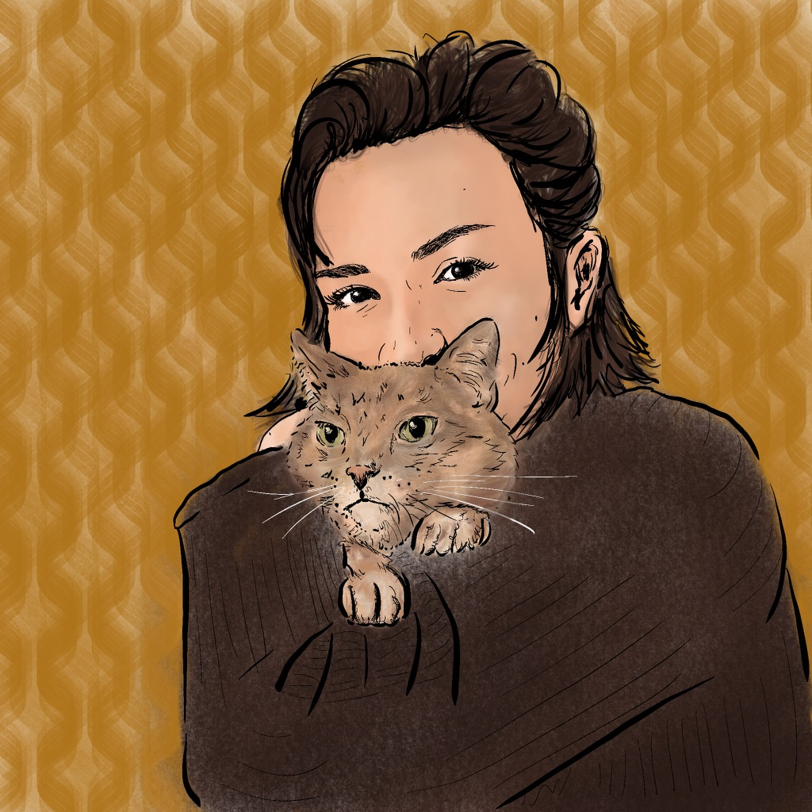

I am a student in the Library and Information Science program at Pratt Institute in New York City. This page is intended to showcase both my personal and academic endeavors. You'll find a sampling of my visual art projects, a spread of baked goods and pastries, papers that I've authored, and my curriculum vitae.
Thank you for visiting. Welcome to my portfolio!